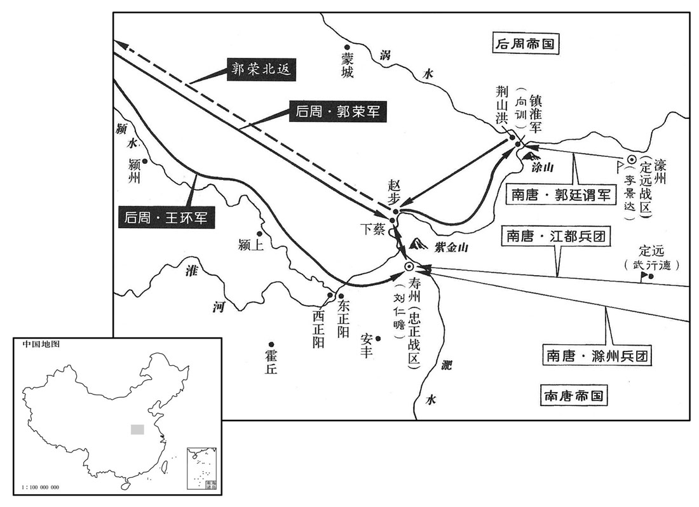
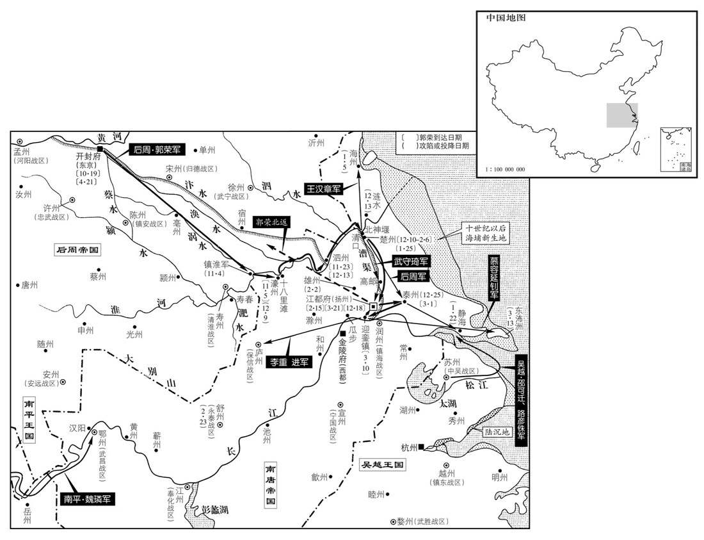

公元957年资治通鉴：本年记事、原文与白话对照
按原书编年位置阅读；追叙和史论不等于本年发生的事件。白话采用所据译本，缺译不以生成译文补齐。
卷293 · 本年记事
公元957年 · 后周世宗睿武孝文皇帝显德四年
四年〔（丁巳、五九七）〕
上传原文件年头的数字有误；按本卷年号与相邻年份定位为957年，原字保留。
上传原文的注释括号有异常，字符原样保留；无法可靠划分的段落默认全文显示。
本年事件索引（现代整理）
- 北汉大赦并改元天会
- 后周宰相请封皇子为王，世宗以功臣尚未受恩为由拒绝
- 南唐援军在紫金山被李重进击败，后周世宗准备亲赴淮上
- 刘仁赡请求让边镐守城，自己率军决战并处死幼子以明军法
- 后周世宗召李谷商议后决意亲征寿州
- 后周世宗命有司重新制定祭器祭玉制度
- 后周任王朴权东京留守并调整京城巡检
- 后周世宗离开大梁前命水军将领王环率水师入淮
- 后周世宗渡淮抵达寿春并攻破紫金山营寨切断援军通道
- 朱元与陈觉不和而投降后周，南唐援军大败
- 赵匡胤沿淮追击南唐溃军并击败紫金山援军
- 后周筑城镇淮军并击败南唐郭廷谓的水军偷袭
- 南唐齐王李景达与陈觉弃濠州逃回金陵
- 后周任向训为武宁节度使兼淮南行营都监
- 后周世宗返回下蔡并赐诏刘仁赡劝其择机归降
- 南唐主欲亲自督战而遭谏阻，随后贬斥直言将领
- 后周世宗在寿春城北耀兵，刘仁赡病重后其部下请降
- 后周迁寿州治所至下蔡并安抚百姓，刘仁赡获封后去世
- 后周赦免为刘令坤之父韩伦，后又将其流放沙门岛
- 韩伦赦还后在洛阳倚势横行，后周世宗未加追究
- 后周世宗下诏开仓赈济寿州饥民后返回大梁
- 后周世宗视察永福殿修建，因役夫受虐而处死宦官孙延希
- 后周遣还八百名后蜀俘虏以震动蜀境
- 后周世宗免李谷朝拜并拒绝其辞职
- 后周将江南降卒编为怀德军
- 后周疏通汴水使船只可由五丈河直达大梁
- 后周任赵匡胤领义成节度使
- 后周命令修订律令并汇编刑统
- 南唐郭廷谓水军截断涡口浮桥并击败武行德
- 后蜀孟昶罢免李廷珪兵权并听取李太后对将领任用的劝告
- 后周任王祚为颍州团练使，王朴侍立迎接来客
- 后周惩处定远军与寿州南城战败的武行德和李继勋
- 北汉主建立七庙
- 李谷病居两年后获准免职但按月入殿议政
- 后周任王朴为枢密使
- 后蜀派怀恩军赴成都致谢，孟昶因后周不答复而愤怒
- 窦俨建议修订礼乐、选拔宰相并整顿吏治与盗贼
- 后周设立贤良方正等科选拔人才
- 后周任麟州刺史杨重训为麟州防御使
- 后周世宗任王朴留守东京并准其便宜行事
- 后周世宗率军攻破濠州水寨与淮南援军，继而乘胜东进
- 北汉刘钧遣兵南侵潞州后撤回
- 南唐泗州守将范再遇率城投降后周
- 后周世宗率亲军沿淮追击南唐水军并俘获陈承昭
- 郭廷谓得知金陵无力救援后决定降周，李延邹拒绝代草降表被杀
- 后周世宗渡淮抵达楚州
- 南唐涟水县守将崔万迪归降后周
- 后周任郭廷谓为亳州防御使
- 后周世宗攻取楚州月城
- 郭廷谓获后周世宗褒奖后奉命攻天长
- 后周乘泰州守备空虚而攻克泰州
- 南汉宰相卢膺去世
- 南汉主因南唐屡败而整军备战，旋即纵酒自宽
- 南唐使者陈处尧在契丹逗留后去世

本年形势与背景参考图

本年形势与背景参考图
春，正月，己丑朔，北汉大赦，改元天会。以翰林学士卫融为中书侍郎、同平章事，内客省使段恒为枢密使。〔恒，户登翻。〕
春季，正月，己丑朔（初一），北汉实行大赦，改年号为天会。任命翰林学士卫融为中书侍郎、同平章事，内客省使段恒为枢密使。
宰相屡请立皇子为王，上曰：「诸子皆幼；〔上诸子，宗训是为恭帝，次熙让、熙谨、熙诲。」〕且功臣之子皆未加恩，而独先朕子，能自安乎！」
后周宰相多次请求册立皇子为王，世宗说：“儿子们都还年幼；况且功臣的儿子都没加封，反而独自先封朕的儿子，能心安理得么！”
周兵围寿春，连年未下，〔前年十一月，周兵始攻寿州。〕城中食尽。齐王景达自濠州遣应援使、永安节度使许文稹、都军使边镐、北面招讨使朱元将兵数万，泝淮救之，军于紫金山，列十余寨如连珠，与城中烽火晨夕相应，又筑甬道抵寿春，〔甬，余拱翻。〕欲运粮以馈之，绵亘数十里。将及寿春，李重进邀击，大破之，死者五千人，夺其二寨。丁未，重进以闻。戊申，诏以来月幸淮上。
后周军队围攻寿春，连年没有攻下，城中粮食吃光。齐王李景达从濠州派遣应援使、永安节度使许文稹和都军使边镐、北面招讨使朱元领兵数万，沿淮水而上救援寿春，军队驻扎在紫金山，排列十几个营寨如同串连的珠子，与城中的烽火早晚相呼应，又修筑两旁有墙的通道直达寿春，准备运输粮食来供应城中，绵延横亘长达几十里。通道将要修到寿春城下，李重进拦截出击，大败南唐军，死的有五千人，夺取两个营寨。丁未（十九日），李重进奏报。戊申（二十日），世宗下诏宣布于下月亲临淮水之上。
刘仁赡请以边镐守城，自帅众决战；〔帅，读曰率。〕齐王景达王许，仁赡愤邑成疾。其幼子崇谏夜泛舟渡淮北，为小校所执，〔校，户教翻。〕仁赡命腰斩之，左右莫敢救，监军使周廷构哭于中门以救之；仁赡不许。廷构复使永救于夫人，〔复，扶又翻。使，疏吏翻。〕夫人曰：「妾于崇谏非不爱也，然军法不可私，名节不可亏；若贷之，则刘氏为不忠之门，妾与公何面目见将士乎！」趣命斩之，然后成丧。〔趣，读曰促。〕将士皆感泣。
刘仁赡请求让边镐守城，自己率领部众决一死战；齐王李景达不准许，刘仁赡因气抑郁成疾。刘仁赡的小儿子刘崇谏夜晚乘船准备渡到淮北，被军中小校抓获，刘仁赡命令腰斩，左右部将没有人敢去救，监军使周廷构在中门大哭来相救；刘仁赡不允许。周廷构又派人向夫人求救，夫人说：“贱妾对崇谏不是不怜爱，然而军法不可徇私，名节不可亏损；倘若宽容他，刘氏就成为不忠之家，贱妾与刘公将有什么面目去见将吏士卒呢！”催促命令腰斩，然后收敛安葬，将吏士兵都感动流泪。
议者以唐援兵尚强，多请罢兵，帝疑之。李谷寝疾在第，二月，丙寅，帝使范质、王溥就与之谋，谷上疏，以为：「寿春危困，破在旦夕，若銮驾亲征，则将士争奋援兵震恐，城中知亡，必可下矣！」上悦。
议事的人认为南唐援军还强大，大多请求撤兵，世宗怀疑所议。李卧病在家，二月，丙寅（初八），世宗派范质、王溥前去与他商议，李上书，认为：“寿春危难困苦，朝夕之间可以攻破，倘若皇上亲自出征，将士就会奋勇争先，南唐援军震惊恐慌，城中守军知道危亡，就必定可以攻下了！”世宗很高兴。
庚午，诏有司更造祭器、祭玉等，命国子博士聂崇义讨论制度，为之图。〔祭器，樽、彝、簠、簋、笾、豆之属也。祭玉，苍璧礼天、黄琮礼地、青圭礼东方、赤璋礼南方、白琥礼西方、玄璜礼北方也。时礼官博士准诏议祭器、祭玉制度，国子祭酒尹拙引崔灵恩三礼义宗云：苍璧，所以礼天，其长十有二寸，盖法天之十二时，又引江都集、白虎通诸书所说，云璧皆外圆内方。又云，黄琮所以礼地，其长十寸，以法地之数。其琮外方内圆，八角而有好。国子博士聂崇义以为璧内外皆圆，其径九寸。按阮氏、郑玄图皆云九寸。周礼玉人职，又有九寸之璧。及引尔雅云：肉倍好谓之璧，好倍肉谓之瑗，肉好若一谓之环。郭璞注云：好，孔也。肉，边也。而不载尺寸之数。崇义又引冬官玉人云：璧好三寸。尔雅云：肉倍妳谓之璧。盖两边肉各三寸，通好共九寸，则其璧九寸明矣。崇义又云：黄琮八方以象地，每角各剡出一寸六分，共长八寸，厚一寸。按周礼图及阮氏图并无好。又引冬官玉人云：，八角而无好。崇义又云：琮、璜、圭、璧，并是礼天地之器，而尔雅唯言璧、环、瑗三者有好，其余琮、璜诸器并不言之，则黄琮八角而无好明矣。时太常卿田敏已下以崇义援引周礼正文为是，乃从之。更，工衡翻。聂，尼辄翻。〕
庚午（十二日），后周世宗诏令有关部门另外制造祭器、祭玉等，命国子博士聂崇义探讨研究礼仪制度，画出图来。
甲戌，以王朴权东京留守兼判开封府事，以三司使张美为大内都巡检，以侍卫都虞候通为京城内外都巡检。
甲戌（十六日），后周世宗任命王朴暂时代理东京留守兼判开封府事，任命三司使张美为大内都巡检，任命侍卫都虞候韩通为京城内外都巡检。
乙亥，帝发大梁。先是周与唐战，〔先，悉荐翻。〕唐水军锐敏，周人无以敌之，帝每以为恨。返自寿春，于大梁城西汴水侧造战舰数百艘，〔舰，户黯翻。艘，苏遭翻。〕命唐降卒教北人水战，数月之后，纵横出没，〔纵，子容翻。〕殆胜唐兵。至是命名骁卫大将军王环将水军数千自闵河沿颍入淮，〔丁度曰：闵河，本曰琵琶沟，今名蔡汀。颍，颍河也，注详见后卷蔡河下。今按蔡河自东京戴楼门入京城，出宣化水门，投东南下，经陈州，至蔡口，入颍河。颍河自嵩山发源，由颍昌至鹿邑界，过蔡河口，与蔡河合流，经顺昌府颍上县，至西正阳，入淮河。〕唐人见之大惊。
乙亥（十七日），世宗从大梁出发。在这之前后周与南唐交战，南唐水军精锐敏捷，后周无法同它抗衡，世宗经常以此为恨。从寿春返回后，在大梁城西汴水岸边制造战舰数百艘，命令南唐投降士卒教北方兵水战，几个月以后，后周水军纵横江湖，出没水中，差不多胜过南唐水军。到这时，命令右骁卫大将军王环率领水军数千人从闵河沿颍水进淮水，南唐军队看见大为震惊。
乙酉，帝至下蔡；三月，己丑夜，帝渡淮，抵寿春城下。庚寅旦，躬擐甲胄，〔擐，音宦。〕军于紫金山南，命太祖皇帝击唐先锋寨及山北一寨，皆破之，斩获三千余级，断其甬道，〔断，音短。〕由是唐兵首尾不能相救。至暮，帝分兵守诸寨，还下蔡。
乙酉（二十七日），世宗到达下蔡；三月，己丑（初二），夜晚，世宗渡过淮水，抵达寿春城下。庚寅（初三）早晨，亲自穿上盔甲，驻军紫金山南面，命令宋太祖皇帝攻击南唐先锋寨以及山北营寨，全都击破，斩获三千多首级，掐断敌军通道，由此南唐军队首尾无法互相救援。到傍晚，世宗诏令分兵把守各个营寨，返回下蔡。
唐朱元恃功，颇违元帅节度；〔朱元恃其复舒、和之功也。〕陈觉与元有隙，屡表元反复，不可将兵，唐主以武昌节度使杨守忠代之。守忠至濠州，觉以齐王景达之命，召元至濠州计事，将夺其兵；元闻之，愤怒，欲自杀，门下客宋垍说元曰：「大丈夫何往不富贵，何必为妻子死乎！」〔垍，其冀翻。说，式芮翻。为，于伪翻。〕辛卯夜，元与先锋壕寨使朱仁裕等举寨万余人降；裨将时厚卿不从，元杀之。
南唐朱元倚仗有战功，常常违抗元帅指挥；陈觉与朱元有裂隙，屡次上表说朱元反复无常，不可领兵，南唐主任命武昌节度使杨守忠取代他。杨守忠到达濠州，陈觉用齐王李景达的命令，召见朱元到濠州计划军事，准备夺取他的兵权；朱元听说此事，异常愤怒，想要自杀，门下客人宋劝朱元说：“大丈夫到哪里不能富贵，何必为了妻子儿女去死呢！”辛卯（初四）夜晚，朱元与先锋壕寨使朱仁裕等率领营寨中一万多人投降；副将时厚卿不服从，朱元杀死了他。
帝虑其余众沿流东溃，遽命虎捷左厢都指挥使赵晁〔五代会要：广元年，改侍卫马军曰龙捷左、右军，步军曰虎捷左、右军。晁，直遥翻。〕将水军数千沿淮而下。壬辰旦，帝军于赵步，〔赵步在淮河北岸水滨泊舟之地。人坎岸为道以上下，谓之步。赵步，以赵氏居其地而得名。今自寿春花下靥镇沿淮东下百余里，得赵步滩，又东径梁城滩北，齐、梁控扼之地也。淮水中有梁城滩，又东二十五里至洛河口。〕诸将击唐紫金山寨，大破庂，杀获万余人，擒许文稹、边镐、杨守忠。余众果沿淮东走，帝自赵步将骑数百循北岸追之，诸将以步骑循南岸追之，水军自中流而下，唐兵战溺死及降者殆四万人，获船舰粮仗以十万数。晡时，帝驰至荆山洪，〔湔山，在濠州锺离县西八十三里，即梁武帝筑堰之地。今怀远军正治荆山。〕距赵步二百余里。是夜，宿镇淮军，〔镇淮军，时置于涡口。〕癸酉，从官始至。〔从，才用翻。〕刘仁赡闻援兵败，扼吭叹息。〔吭，苦郎翻。〕
世宗考虑南唐其余部众会沿着水流向东溃逃，赶紧命令虎捷左厢都指挥使赵晁带领数千水军沿着淮水而下。壬辰（初五）早晨，世宗驻扎在赵步，众将攻击南唐紫金山营寨，大败唐军，杀死俘获一万多人，活捉许文稹、边镐、杨守忠。其余部队果然沿着淮水向东逃跑，世宗从赵步率领数百骑兵沿北岸追赶，众将率步兵、骑兵沿南岸追赶，水军从淮水中流而下，南唐军队战死淹死和投降的将近四万人，缴获船舰粮食兵器数以十万计。黄昏时分，世宗奔驰到荆山洪，距离赵步二百多里。当夜，住宿在镇淮军，癸酉（疑误），随从官员才到达。刘仁赡听说援兵溃败，气噎喉咙而叹息。
甲午，发近县丁夫〔【章：十二行本「夫」下有「数千」二字；乙十一行本同；孔本同；张校同。】〕城镇淮军，为二城，夹淮水，徙下蔡浮梁于其间，扼濠、寿应援之路。会淮水涨，唐濠州都监彭城郭廷谓以水军泝淮，欲掩不备，焚浮梁；右龙武统军赵匡赞觇知之，〔觇，丑廉翻，又丑艳翻。〕伏兵邀击，破之。
甲午（初七），后周征发附近州县壮丁民夫修筑镇淮军城，建造两座城，中夹淮水，将下蔡浮桥迁移到两城之间，掐断濠州、寿州接应救援的道路。适逢淮水上涨，南唐濠州都监彭城人郭廷谓率水军沿淮水而上，想乘不备之时突然袭击，焚毁浮桥；右龙武统军赵匡赞窥察知道，埋伏军队拦击，打败南唐军。
唐齐王景达及陈觉皆自濠州奔归金陵，惟静江指挥使陈德诚全军而还。〔陈德诚，诲之子也。还，从宣翻，又如字。〕
南唐齐王李景达和陈觉都从濠州逃回金陵，只有静江指挥使陈德诚全军而还。
戊戌，以淮南节度使向训为武宁节度使、淮南道行营都监，将兵戍镇淮军。
戊戌（十一日），后周世宗任命淮南节度使向训为武宁节度使、淮南道行营都监，领兵戍守镇淮军。
己亥，上自镇淮军复如下蔡。庚子，赐刘仁赡诏，使自择祸福。
己亥（十二日），后周世宗从镇淮军再次前往下蔡。庚子（十三日），赐刘仁赡诏书，让他自己选择吉凶祸福。
唐主议自督诸将拒周，中书舍人乔匡舜上疏切谏，唐主以为沮众，流抚州。〔沮，在吕翻。〕唐主问神卫统军朱匡业、刘存忠以守御方略，匡业诵罗隐诗曰：「时来天地皆同力，运去英雄不自由。」存忠以匡业言为然。唐主怒，贬匡业抚州副使，流存忠于饶州。既而竟不敢自行。
南唐主拟议亲自督率众将抵抗后周，中书舍人乔匡舜上书恳切劝谏，南唐主认为动摇军心，流放抚州。南唐主问神卫统军朱匡业、刘存忠防御策略，朱匡业背诵罗隐的诗道：“时机到来天地都同力助，气运离去英雄也身不由己。”刘存忠认为朱匡业的话很对。南唐主发怒，贬谪朱匡业为抚州副使，将刘存忠流放到饶州。不久他自己也居然不敢出行。
甲辰，帝耀兵于寿春城北。唐清淮节度使兼侍中刘仁赡病甚，不知人，丙午，监军使周廷构、营田副使孙羽等作仁赡表，遣使奉之来降。丁未，帝赐仁赡诏，遣合门使万年张保续入城宣谕，仁赡子崇让复山谢罪。戊申，帝大陈甲兵，受降于寿春城北，廷构等升仁赡出城，〔升，音余，又羊茹翻。〕仁赡卧不能起，帝慰劳赐赉，〔劳，力到翻。赉，来代翻。〕复令入城养疾。〔复，扶又翻。考异曰：实录：「时仁赡卧疾已亟，遂翻然纳款，而城内诸军万计，皆屏息以听其命。」又曰：「仁赡轻财重士，法令严肃，故能以一城之众连年拒守。逮其来降，而其下无敢窃议者，斯亦一时之名将也。」欧阳史：「三月，仁赡病甚，已不知人，其副使孙羽诈为仁赡书，以城降。世宗命升仁赡至帐前，嗟叹久之，赐以玉带、御马，复使入城养疾。是日，制曰：『刘仁赡尽忠所事，抗节无亏，前代名臣，几人可比！予之南伐，得尔为多。』乃拜仁赡检校太尉兼中书令、天平军节度使。仁赡不能受命而卒。世宗追封彭城郡王，以其子崇赞为怀州刺史。李景闻仁赡卒，亦赠太师。」又曰：「仁赡既杀其子以自明矣，岂有垂死而变节者乎！」今周世宗实录载仁赡降书，盖其副使孙羽等所为也。当世宗时，王环为蜀守秦州，攻之久不下，其后力屈而降，世宗颇嗟其忠，然止以为大将军。视世宗待二人之薄厚而考制书，乃知仁赡非降者也。今从之。
本段缺少可靠对应白话，原文完整保留；未使用生成译文。
庚戌，徙寿州治下蔡，〔寿州，宋升为寿春府，至今治下蔡县，而寿春故县自为县，在淮水之南，西北距下蔡二十五里。高宗南渡，复于寿州旧治寿春县建安丰军，以为控扼之地，盖地险所在，通古今不能易也。宋白曰：下蔡，古之蔡国，吴之州来。左传「蔡成公迁于州来，谓之下蔡」，是也，汉为下蔡县；梁于硖石山筑城以拒魏，即今县城也。〕赦州境死罪以下。州民受唐文书聚山林者，并召令复业，勿问罪；有尝为其杀伤者，毋得雠讼。向日政令有不便于民者，令本州岛条奏。辛亥，以刘仁赡为天平节度使兼中书令，制辞略曰：「尽忠所事，抗节无亏，前代名臣，几人堪比！朕之伐叛，得尔为多。」是日，卒，追赐爵彭城郡王。唐主闻之，亦赠太师。帝复以清淮军为忠正军〔杨氏以寿州置忠正军，后改清淮军，今复为忠正军以旌刘仁赡之节。按薛史：唐明宗天成二年，诏升寿州为忠正军。长兴二年闰五月己丑，升庐州为昭顺军。八月癸酉，升州为昭信军。宋白续通典曰：寿州，后唐天成元年升为顺化军节度。今并存之，以俟博考。〕以旌仁赡之节，以右羽林统军杨信为忠正节度使、同平章事。
庚戌（二十三日），将寿州府治迁到下蔡，赦免州境内死罪以下全部囚犯。州中百姓因受到南唐刑法处理而聚集山林的，一并召回让他们重操旧业，不加问罪；有曾经被他们伤害过的，不得报仇打官司。昔日政令有不便于百姓的，命令本州条陈奏报。辛亥（二十四日），任命刘仁赡为天平节度使兼中书令，制书内容大致说：“对事奉的君主竭尽忠诚，高风亮节没有欠缺，前代名臣良将，能有几人可以比拟！朕讨伐叛逆，得到你才真正值得称道。”当日，刘仁赡去世，追赐爵位为彭城郡王。南唐主闻悉，也追赠刘仁赡为太师。世宗又将清淮军改为忠正军来表彰刘仁赡的节操，任命右羽林统军杨信为忠正节度使、同平章事。
前许州司马韩伦，侍卫马军都指挥使令坤之父也。令坤领镇安节度使，伦居于陈州，〔陈州，镇安军治所。〕干预政事，贪污不法，为公私患，为人所讼，令坤屡为之泣请。〔屡为，于伪翻。〕癸丑，诏免伦死，流沙门岛。〔登州蓬莱县有沙门岛，置沙门寨。〕
前许州司马韩伦，是侍卫马军都指挥使韩令坤的父亲。韩令坤兼领镇安节度使，韩伦居住在陈州，干预当地政事，贪污违法，成为官府、百姓的祸患，被人起诉，韩令坤屡次为他哭泣求情。癸丑（二十六日），后周世宗下诏韩伦免于处死，流放沙门岛。
伦后得赦还，居洛阳，与光禄卿致仕柴守礼及当时将相王溥、王晏、王彦超之父游处，恃势恣横，洛阳人畏之，谓之十阿父。〔处，昌吕翻；下处之同。横，户孟翻。阿，乌葛翻。〕帝既为太祖嗣，人无敢言守礼子者，但以元舅处之，优其俸给，未尝至大梁；尝以小忿杀人，有司不敢诘，〔诘，去吉翻。〕帝知而不问。
韩伦后来得到赦免返回，居住洛阳，与光禄卿退休柴守礼以及当时将相王溥、王晏、王彦超的父亲交游相处，依杖权势恣意横行，洛阳百姓怕他们，称作“十阿父”。世宗成为太祖继承人，别人不敢说他是柴守礼的儿子，只以长舅看待柴守礼，给他优厚的俸禄给养，但未曾到达大梁；柴守礼曾经因一点小小的忿恨而杀人，官吏不敢查究，世宗知道而不过问。
诏开寿州仓振饥民。丙辰，帝北还；〔还，从宣翻。〕夏，四月，己巳，至大梁。
后周世宗诏令打开寿州粮仓救济饥民。丙辰（二十九日），世宗北上返回；夏季，四月，己巳（十二日），到达大梁。
诏修永福殿，命宦官孙延希董其役。丁丑，帝至其所，见役徒有削窃为匕，瓦中噉饭者，〔窃，方废翻，木札也。匕，卑履翻。噉，徒滥翻。〕大怒，斩延希于市。
后周世宗诏令修缮永福殿，命令宦官孙延希监督工程。丁丑（二十日），世宗到达修缮场所，看到役徒有使用木片削成的勺子，在瓦片中盛饭吃的，勃然大怒，将孙延希在街市斩首。
帝之克秦、凤也，〔事见上卷二年。〕以蜀兵数千人为怀恩军。乙亥，遣怀恩指挥使萧知远等将士八百余人西还。〔既以示中国威德，又欲使之言己克平淮南数千里之地，〕以恐动蜀人。
后周世宗攻克秦州、凤州后，将后蜀士兵数千人组建为怀恩军。乙亥（十八日），派遣怀恩指挥使萧知远等率领将士八百多人向西返回。
壬午，李谷扶疾入见，〔见，贤遍翻。〕帝命不拜，坐于御坐之侧。〔御坐，徂卧翻。〕谷恳辞禄位，不许。
壬午（二十五日），李抱病入朝谒见，世宗命令不必不拜，让他坐在天子座位的旁边。李恳切辞去俸禄职位，但世宗不答应。
甲申，分江南降卒为六军、三十指挥，号怀德军。
甲申（二十七日），后周将江南投降的士兵分编成六军、三十指挥，号称怀德军。
乙酉，诏疏汴水北入五丈河，〔河自都城历曹、济及郓，其广五丈，旧名五丈河；宋开宝六年，诏改名广济河。薛史曰：浚五丈河，东流于定陶，入于济，以通齐、鲁运路。〕由是齐、鲁舟楫皆达于大梁。
乙酉（二十八日），后周世宗诏令疏通汴水让其向北流入五丈河，从此齐、鲁一带的船只都能直达大梁。
五月，丁酉，以太祖皇帝领义成节度使。
五月，丁酉（十一日），后周世宗任命宋太祖皇帝兼领义成节度使。
诏以律令文古难知，格敕烦杂不壹，命御〔【章：十二行本「御」上有「侍」字；乙十一行本同；张校同。史知杂事张湜等〔唐制：御史台有侍御史六人，以久次者一人知杂事，谓之杂端。杜佑通典曰：知杂事，谓之南床，殿中、监察不得坐。凡侍御史之例，不出累月，迁登南省，故谓之南床。百官察其行止、出入、揖让、去就，殿以下皆禀而随之。湜，丞职翻。〕训释，详定为刑统。〔刑统一书，终宋之世行之。〕
两版字句有差异，建议核对原文。
后周世宗诏令因法律条令文字古奥艰深难以明白，格式、敕令繁杂众多互为统一，命令御史知杂事张等训诂诠释，缜密编定为《刑统》。
唐郭廷谓将水军断涡口浮梁，又袭败武宁节度使武行德于定远，〔断，音短。败，补迈翻。〕行德仅以身免。唐主以廷谓为滁〔【严：「滁」改「濠」。】〕州团练使，充上淮水陆应援使。〔上淮，谓淮水之上游也。〕
南唐郭廷谓率领水军切断涡口浮桥，并且在定远偷袭击败武宁节度使武行德，武行德仅仅自己逃脱。南唐君主任命郭廷谓为滁州国练使，充任上淮水陆应援使。
蜀人多言左右卫圣马步都指挥使、保宁节度使、同平章事李廷珪为将败覆，〔败覆，谓败军而秦、凤、阶、成四州之地覆没。〕不应复典兵；〔应，于陵翻。不应，犹言不当也。复，扶又翻。〕廷珪亦请罢去。六月，乙丑蜀主加廷珪检校太尉，罢军职。李太后以典兵者多非其人，谓蜀主曰：「吾昔见庄宗跨河与梁战，及先帝在太原，平二蜀，诸将非有大功，无得典兵，故士卒畏服。〔李太后本唐庄宗后宫，庄宗以赐蜀高祖，故能言二主时事。〕今王昭远出于厮养，〔王昭远，成都人，年十三，事东郭禅师智諲为童子。蜀高祖尝饭僧于府，昭远执巾履随智諲以入，高厂爱其慧黠，时后主方就学，令昭远给事左右，由是见亲狎。厮，音斯。养，余亮翻。〕伊审征、韩保贞、赵崇韬皆膏粱乳臭子，〔按路振九国志：赵崇韬者，廷隐之子。〕素不习兵，徒以旧恩寘于人上，平时谁敢言者，一旦疆场有事，安能御大敌乎！以吾观之，惟高彦俦太原旧人，终不负汝，自余无足任者。」蜀主不能从。〔及孟氏之亡，仅高彦俦一人能以死殉国；至蜀主之死，其母亦不食而卒。妇人志节如此，丈夫多有愧焉者。〕
后蜀人大多议论左右卫圣马步都指挥使、保宁节度使、同平章事李廷担任将领而兵败覆没，不应该再统领军队；李廷自己也请求罢免。六月，乙丑（初十），后蜀主诏令李廷加官检校太尉，罢去军队职务。李太后因为统领军队的将帅大多不是合适人选，就对后蜀主说：“我从前看见唐庄宗跨越黄河与梁朝作战，以及先帝在太原任职，其后平定西川、东川，各位将领没有重大战功，不得统领军队，所以士兵畏惧服从。如今王昭远出身役徒下人，伊审征、韩保贞、赵崇韬都是膏粱纨、乳臭未干的贵胄子弟，素来不熟悉军事，只是因为旧日恩宠而置于常人之上，平时谁敢说他们，然而一旦边疆有战事，他们怎么能抵御入侵大敌呢！按我的观察，只有高彦俦是先帝在太原时的老人，终究不会背负您，其余均不值得重用。”后蜀主没能听从。
丁丑，以前华州刺史王祚为颍州团练使。祚，溥之父也。溥为宰相，祚有宾客，溥常朝服侍立；〔华，户化翻。朝，直遥翻。〕客坐不安席，祚曰：「籖犬不足为起。」〔籖，与豚同。足为，于伪翻。〕
丁丑（二十二日），后周世宗任命前华州刺史王祚为颍州团练使。王祚是王溥的父亲。王溥担任宰相，遇到王祚有宾客，王溥经常穿着朝服立着侍候，客人们坐在席上很不安，王祚说：“犬子不值得诸位为他起身。”
秋，七月，丁亥，上治定远军及寿春城南之败，〔定远，县名，属濠州。「军」字衍。定远之败见上五月。寿春城南之败见去年六月。〕以武宁节度使兼中书令武行德为左卫上将军，河阳节度使李继勋为右卫大将军。
秋季，七月，丁亥（初二），后周世宗处理定远军和寿春城南的失败，任命武宁节度使兼中书令武行德为左卫上将军，河阳节度使李继勋为右卫大将军。
北汉主初立七庙。〔北汉主自以承高祖、隐帝之后，与僭窃者不同；然地狭国贫，日困于兵，今始能立七庙以仿天子之制。〕
北汉主开始设立祖宗七庙。
司空兼门下侍郎、同平章事李谷卧疾二年，凡九表辞位；八月，乙亥，罢守本官，令每月肩舆一诣便殿议政事。
司空兼门下侍郎、同平章事李卧病二年，前后共九次上表辞职；八月，乙亥（二十一日），后周世宗诏令免去李同平章事之职保留原官，让他每月坐着轿子到便殿一次，议论朝廷政事。
以枢密副使、户部侍郎王朴检校太保，充枢密使。
后周世宗任命枢密副使、户部侍郎王朴为检校太保，充任枢密使。
怀恩军至成都，〔是年四月遣怀恩军西还，今方至成都。〕蜀主遣梓州别驾胡立等八十人东还，〔胡立为蜀所禽见上卷二年。还，从宣翻。〕且致书为谢，请通好。〔好，呼到翻。〕癸未，立等至大梁。帝以蜀主抗礼，不之答；蜀主闻之，怒曰：「朕为天子郊祀天地时，尔犹作贼，何敢如是！」
怀恩军到达成都，后蜀主派遣梓州别驾胡立等八十人向东返回，并且致书信表示感谢，请求通使友好。癸未（二十九日），胡立等人到达大梁。后周世宗因为后蜀主采用对等礼节，便不回复他；后蜀主闻悉后，发怒说：“朕为天子在郊外祭祀天地时，你还在当盗贼，怎么敢如此无礼！”
九月，中书舍人窦俨上疏请令有司讨论古今礼仪，作大周通礼，考正锺律，作大周正乐。又以为：「为政之本，莫大择人；择人之重，莫先宰相。自有唐之末，轻用名器，始为辅弼，即兼三公、仆射之官。故其未得之也，则以趋竞为心；既得之也，则以容默为事。但思解密勿之务，守崇重之官，逍遥林亭，保安宗族。乞令即日宰相于南宫三品、两省给、舍以上，各举所知。〔即日宰相，谓见在相位者。南宫，谓尚书省也。三品，谓六部尚书也。两省，谓中书、门下省也。给、舍，谓给事中、中书舍人也。〕若陛下素知其贤，自可登庸；〔庸，用也。〕若其未也，且令以本官权知政事。期岁之间，察其职业，若果能堪称，〔堪称，堪其任，称其职也。称，尺证翻；下不称同。〕其官已高，则除平章事；未高，则稍更迁官，权知如故。若有不称，则罢其政事，责其举者。又，班行之中，〔行，户刚翻。〕有员无职者太半，〔如诸卫将军、东宫官属、内诸使之类。〕乞量其才器，〔量，音良。〕授以外任，试之于事，还〔【章：十二行本「还」下有「则」字；乙十一行本同；孔本同；张校同。】〕以旧官登叙，考其治状，〔治，直吏翻。〕能者进，久否者黜之。」又请：「令盗贼自相纠告，以其所告赀产之半赏之；或亲戚为之首，则论其徒侣而赦其所首者。如此，则盗不能聚矣。〔言或亲戚相与为盗，其中有能自首者则〕赦之，其徒侣则论其罪也。首，式又翻。」又，新郑乡村团为义营，各立将佐，一户为盗，累其一村，〔将，即亮翻；下同。累，力瑞翻。〕一户被盗，罪其一将。每有盗发，则鸣鼓举火，丁壮云集，盗少民多，无能脱者。由是邻县充斥而一境独清。〔充斥、独清，皆言盗也。〕，请令他县皆效之，亦止盗之一术也。又，累朝已来，屡下诏书，听民多种广耕，止输旧税，〔朝，直遥翻。输，春遇翻。〕及其既种，则有司履亩而增之，故民皆疑惧而田不加辟。夫为政之先，莫如敦信，信苟着矣，则田无不广，田广则谷多，谷多则藏之民犹藏之官也。」又言：「陛下南征江、淮，一举而得八州，〔八州，谓光、黄、〕舒、蕲、和、扬、滁、泰，皆取之。」再驾而平寿春，〔事见上三月。〕威灵所加，前无强敌。今以众击寡，以治伐乱，势无不克，〔治，直吏翻。〕但行之贵速，则彼民免俘馘之灾，此民息转输之困矣。」帝览而善之。俨，仪之弟也。
九月，中书舍人窦俨上书请求命令有关官员研讨纂集古今的礼仪，撰作《大周通礼》，考究校正黄钟律度，撰作《大周正乐》。同时认为：“治理政事的根本，没有比选择人材更重要的；选择人材的重点，没有比挑选宰相更首要的。自从唐朝末年以来，轻易赐爵封官，刚担任宰相辅佐天子处理朝政，便立即兼领司徒、司空、司马三公和仆射的官位。因此许多人在没得到职位时，就一门心思追逐猎取；得到职位以后，就专以沉默寡言、明哲保身为事，只考虑如何解脱耗神费力的政务，守住位高权重的官职，整天逍遥在园林亭台之中，保护家族的平安。请求命令现任宰相至尚书省六部尚书、中书省及门下省给事中、中书舍人以上，各自荐举所知道的人材。倘若陛下平素知道其人贤能，自己可以提拔任用；倘若不清楚，暂且让其人以原来官位暂时主持政事。用一年左右的时间，考察他的职责业绩，倘若果真能够胜任，他原来的官位已经高了，就正式授予平章事；倘若原来的官位不高，就再稍加提升，代理主持政事照旧。倘若有不称职的，就罢免他处理政事的资格，追究荐举者的责任。此外，在朝做官的班次行列之中，有名额而无职责的占了大半，请求衡量他们的才能本领，授官出外任职，在实际事务中试用，回京入朝后按原职登录叙用，考察他的政绩，能干的提拔，无能的贬黜。”又请求：“让盗贼自己相互检举揭发，将被告发者的一半财产赏给告发者；或有亲戚替他自首的，就判处他的党徒同伙而赦免所自首者。像这样，盗贼就不能聚集了。另外，新郑的乡村组织成义营，分别设立将佐，一户当盗贼，就连累一村，一户遭遇盗抢，就怪罪一将。每当有盗贼发生，就击鼓举火，成年男子云集出事地点，盗贼少而百姓多，便没有能漏网逃脱的。如此邻近县乡盗贼充斥而新郑全境独自肃清盗贼。请求下令其他州县都仿效新郑，这也是阻止盗贼的一个办法。同时，历朝以来，多次颁下诏书，听凭农民在旧田以外多种广耕，只交纳旧税，但等到农民已经种上，官吏就丈量田亩而增税，所以农民都怀疑惧怕而田地不再开辟。实行政令的先决条件，没有比诚实信用更重要的，如果信用卓著，田地就不会不扩大，田地扩大粮食就增多，粮食增多藏在农民手里就如同藏在官府一样。”又说：“陛下南下征伐长江、淮水流域，一举而取得八个州，再次出征而平定寿春，神威所至之处，前面无有强敌对手。如今以多击少，以治伐乱，势必攻无不克，只是行动上贵在神速，对方的百姓就可免于俘获斩首的灾难，这里的百姓则能消除辗转运输的困苦。”世宗阅后认为好。窦俨是窦仪的弟弟。
冬，十月，戊午，设贤良方正直言极谏、经学优深可为师法、详闲吏理达于教化等科。〔此所谓制举也。时诏应天下诸色人中，不限前资、见任职官，黄衣草泽，并许应诏。其逐处州府，依每年贡举人式例，差官考试，解送尚书吏部，仍量试策论三道，共三千字已上，当日取文理俱优，人物爽秀，方得解送，取来年十月集上都。其登朝官亦许上表自举。〕
冬季，十月，戊午（初五），后周设立贤良方正直言极谏、经学优深可为师法、详闲吏理达于教化等科荐举人材。
癸亥，北汉麟州刺史杨重训举城降，〔太祖广顺二年，杨重训以麟州归款，中间必又附北汉也。〕以为麟州防御使。
癸亥（初十），北汉麟州刺史杨重训率城投降，后周世宗任命他为麟州防御使。
己巳，以王朴为东京留守，听以便宜从事。以三司使张美充大内都点检。
己巳（十六日），后周世宗任命王朴为东京留守，准许他根据情况机断行事。任命三司使张美充任大内都点检。
壬申，帝发大梁；十一月，丙戌，至镇淮军，是夜五鼓，济淮；丁亥，至濠州城西。濠州东北十八里有滩，唐人栅于其上，环水自固，〔环，音宦。〕谓周兵必不能涉。戊子，帝自攻之，命内殿直康保裔帅甲士数百，乘橐驼涉水，〔帅，读曰率；下同。〕太祖皇帝帅骑兵继之，遂拔之。李重进破濠州南关城。癸巳，帝自攻濠州，王审琦拔其水寨。唐人屯战船数百于城北，又植巨木于淮水以限周兵。帝命水军攻之，拔其木，焚战船七十余艘，〔艘，苏遭翻；下同。〕斩首二千余级，又攻拔其羊马城，城中震恐。丙申夜，唐濠州团练使郭廷谓上表言：「臣家在江南，今若遽降，恐为唐所种族，〔种，章勇翻。〕请先遣使诣金陵禀命，然后出降。」帝许之。辛丑，帝闻唐有战船数百艘在涣水东，〔涣水径宿、亳之间，东南至巉石山西，而南入淮。〕欲救濠州，自将兵夜发水陆击之。癸卯，大破唐兵于洞口，〔今濠州东九十里有浮山，山下有穴，名浮山洞，夏潦不能及而冬不加高，故人疑其山为浮洞口，窃意即浮山洞口。〕斩首五千余级，降卒二千余人，因鼓行而东，所至皆下乙巳，至泗州城下，太祖皇帝先攻其南，因焚城门，破水寨及月城。〔月城者，临水筑城，两头抱水，形如却月。〕帝居于月城楼，督将士攻城。
壬申（十九日），世宗从大梁出发。十一月，丙戌（初四），到达镇淮军，当夜五更，渡过淮水。丁亥（初五），到达濠州城西。濠州东北十八里有个滩，南唐人在滩上设置栅栏，四周环水据以固守，认为后周军队必定无法渡河。戊子（初六），世宗亲自攻打，命令内殿直康保裔率领全副武装士兵数百人，乘着骆驼涉水，宋太祖皇帝率领骑兵随后，于是拔取。李重进攻破濠州南关城。癸巳（十一日），世宗亲自进攻濠州，王审琦攻取了南唐军水寨。南唐军队在城北面聚集数百条战船，又在淮水中竖起大木头来阻拦后周军队。世宗命令水军进攻，拔掉大木头，烧毁战船七十多艘，斩首二千多级，又攻破羊马城，城中震动恐慌，丙申（十四日）夜晚，南唐濠州团练使郭廷谓上表给后周世宗说：“臣下家在江南，如今倘若马上投降，恐怕被唐人诛灭全族，请求先派遣使者到金陵请命，然后出城投降。”世宗答应了他。辛丑（十九日），世宗听说南唐有数百艘战船在涣水东面，准备救援濠州，便亲自领兵夜晚派出水军、陆军进攻。癸卯（二十一日），在洞口大败南唐军队，斩首五千余级，投降士兵二千多人，后周军队乘势击鼓向东行进，所到之处都被攻克。乙巳（二十三日），到达泗州城下，宋太祖皇帝先攻城南，乘势焚烧城门，攻破水寨和月城。世宗住在月城楼上，监督将士攻打泗州城。
北汉主自即位以来，〔显德元年，冬十一月，北汉主即位。〕方安集境内，未遑外略。是月，契丹遣其大同节度使、侍中崔勋将兵来会北汉，欲同入寇，北汉主遣其忠武节度使、同平章事李存緕将兵会之，南侵潞州，至其城下而还。〔忠武军，许州，属周，李存緕遥领耳。还，从宣翻，又如字。〕北汉主知契丹不足恃而不敢遽与之绝，赠送勋甚厚。〔犹欲倚之以为声援。〕
北汉主从即位以来，正忙于安定国内，没空对外攻略。当月，契丹派遣大同节度使、侍中崔勋领兵来会合北汉军队，准备共同入侵后周，北汉君主派遣忠武节度使、同平章事李存领兵会合崔勋的军队，南下侵犯潞州，到达城下而返回。北汉主知道契丹靠不住而不敢立即与之断绝关系，便赠送给崔勋很丰厚的礼物。
十二月，乙卯，唐泗州守将范再遇举城降，以再遇为宿州团练使。上自至泗州城下，禁军中刍荛者毋得犯民田，〔荛，如招翻。〕民皆感悦，争献刍粟；既克泗州，无一卒敢擅入城者。帝闻唐战船数百艘泊洞口，遣骑诇之，唐兵退保清口。〔诇，古永翻，又翾正翻。清口，即清河口也。〕
十二月，乙卯（初三），南唐泗州守将范再遇率城投降，后周任命范再遇为宿州团练使。世宗亲自到达泗州城下，下令军中割草打柴的人不得侵犯农民田地，农民都感激喜悦，争相献送粮草；攻克泗州以后，没有一名士兵敢擅自入城。世宗闻悉南唐数百艘战船停泊在洞口，派遣骑兵侦察，南唐军队退守清口。
戊午，〔【章：十二行本「午」下有「旦」字；乙十一行本同；孔本同。】〕上自将亲军自淮北进，命太祖皇帝将步骑自淮南进，诸将以水军自中流进，共追唐兵。时淮滨久无行人，葭苇如织，多泥淖沟堑，〔淖，奴教翻。堑，七艳翻。〕士卒乘胜气茇涉争进，皆忘其劳。〔茇，蒲拨翻。草行为茇，水行为涉。〕庚申，追及唐兵，且战且行，金鼓声闻数十里。〔闻，音问。〕辛酉，至楚州西北，大破之。〔九域志：泗州西至濠州一百七十五里，东北至楚州二百二十里。〕唐兵有沿淮东下者，帝自追之，太祖皇帝为前锋，行六十里，擒其保义节度使、濠．泗．楚．海都应援使陈承昭以归。〔保义军，陕州，属周，陈承昭遥领耳。〕所获战船烧沈之余〔沈，持林翻。〕得三百余艘，士卒杀溺之余得七千余得七千余人。唐之战船在淮上者，于是尽矣。
戊午（初六），世宗亲自率领警卫部队从淮水北岸挺进，命令宋太祖皇帝率领步兵、骑兵从淮水南岸挺进，众将率领水军从淮水中流挺进，共同追击南唐军队。当时淮水之滨长久没有行人，芦苇茂密如织，到处沼泽沟坑，士兵凭借胜利的气势跋涉泥泞争相前进，都忘却了劳累。庚申（初八），追上南唐军队，边打边进，金鼓的声音传到周围数十里。辛酉（初九），到达楚州西北，大败南唐军。南唐军队有沿淮水向东而下的，世宗亲自追赶，宋太祖皇帝担任前锋，出行六十里，擒获南唐保义节度使、濠、泗、楚、海都应援使陈承昭而返归。所缴获的战船除去烧毁沉没之外共得三百多艘，士兵斩杀淹死之外共俘七千多人，南唐人在淮水上的战舰，全在这场战斗中歼灭了。
郭廷谓使者自金陵还，〔还，从宣翻，又如字。〕知唐不能救，命录事参军鄱阳李延邹草降表。延邹责以忠义，廷谓以兵临之，延邹掷笔曰：「大丈夫终不负国，为叛臣作降表！」〔为，于伪翻。史言李延邹忠壮。〕廷谓斩之，举濠州降，得兵万人，粮数万斛。唐主赏李延邹之子以官。
郭廷谓的使者从金陵回来，得知南唐朝廷不能救援，便命令录事参军鄱阳人李延邹起草投降表书。李延邹用忠义来斥责郭廷谓，郭廷谓用兵器相逼，李延邹将笔掷地说：“大丈夫最终决不辜负国家去为叛臣写投降表书！”郭廷谓杀死他，率濠州投降，后周得到兵员万人，粮食数万斛。南唐主用官位赏赐李延邹的儿子。
壬戌，帝济淮，至楚州，营于城西北。
壬戌（初十），世宗渡过淮水，到达楚州，在城西北安营。
乙丑，唐雄武军使、知涟水县事崔万迪降。
乙丑（十三日），南唐雄武军使、知涟水县事崔万迪投降。
丙寅，以郭廷谓为亳州防御使。
丙寅（十四日），任命郭廷谓为毫州防御使。
戊辰，帝攻楚州，克其月城。
戊辰（十六日），世宗进攻楚州，攻克城外的月城。
庚午，郭廷谓见于行宫，〔见，贤遍翻。〕帝曰：「朕南征以来，江南诸将败亡相继独卿能断涡口浮梁，破定远寨，〔事见上五月。〕所以报国足矣。濠州小城，使李璟自守，能守之乎！」〔璟，居永翻。〕使将濠州兵攻天长。帝遣铁骑左厢都指挥使武守琦将骑数百趋扬州，至高邮；〔九域志：高邮，东南至扬州一百里。趋，七喻翻。〕唐人悉焚扬州官府民居，驱其人南渡江，〔九域志：扬州南至江四十五里。〕后数日，周兵至，城中余癃病十余人而已，〔癃，良中翻，疲病也。〕癸酉，守琦以闻。
庚午（十八日），郭廷谓在行宫拜见，世宗说：“朕南下征伐以来，江南众将相继战败逃亡，只有爱卿能切断涡口浮桥，击破定远寨，用以报答国家的战功足够了。濠州是个小城，让李自己把守，能守住吧！”派他率领濠州军队进攻天长。世宗派遣铁骑左厢都指挥使武守琦率领数百骑奔赴扬州，到达高邮；南唐人焚烧扬州全部官府民宅，驱赶扬州百姓向南渡过长江。几天以后，后周军队到达，城中只剩下十几个手脚不便的癃病患者。癸酉（二十一日），武守琦将情况报告。
帝闻泰州无备，遣兵袭之，丁丑，拔泰州。
两版字句有差异，建议核对原文。
世宗闻悉泰州没有防备，派兵袭击。丁丑（二十五日），拔取泰州。
南汉中书侍郎、同平章事卢膺卒。
南汉中书侍郎、同平章事卢膺去世。
南汉主闻唐屡败，忧形于色，遣使入贡于周，为湖南所闭，〔闭，塞也。塞其道不得通也。〕乃治战舰，修武备；既而纵酒酣饮，曰：「吾身得免，幸矣，何暇虑后世哉！」〔此所谓坐而待亡者也。又古语云：「民主偷必死。」南汉主将死之征也！治，直之翻。舰，户黯翻。〕
南汉主闻悉唐军屡遭失败，忧愁溢于言表，派遣使者向后周进贡，道路被湖南所阻塞，于是建造战舰，进行军事准备；不久纵酒狂饮，说：“我自身能免于战火，就很幸运了，还有什么闲暇来考虑后代呢！”
唐使者陈处尧在契丹，白契丹主请南游太原，北汉主厚礼之；留数日，北还，竟卒于契丹。〔去年，唐主遣陈处尧如契丹乞师。〕
南唐使者陈处尧在契丹，禀报契丹主请求南下太原游玩，北汉主对他厚礼相待；停留数日，北上返回，陈处尧最终死在契丹。
译本中未与胡注本可靠对应的内容
以下另列供核对版本差异，不并入胡注本正文。
译本所附古文
甲辰，帝耀兵于寿春城北。唐清淮节度使兼侍中刘仁赡病甚，不知人，丙午，监军使周廷构、营田副使孙羽等作仁赡表，遗使奉之来降。丁未，帝赐仁赡诏，遣门使万年张保续入城宣谕，仁赡子崇让复出谢罪。戊申，帝大陈甲兵，受降于寿春城北，廷构等舁仁赡出城，仁赡卧不能起，帝慰劳赐赉，复令入城养疾。
译本白话
甲辰（十七日），后周世宗在寿春城北显示兵力。南唐清淮节度使兼侍中刘仁赡病得很重，不省人事，丙午（十九日），监军使周廷构、营田副使孙羽等以刘仁赡的名义起草表书，派遣使者拿着前来投降。丁未（二十日），世宗赐刘仁赡诏书，派遣门使万年人张保续入城宣示安抚，刘仁赡儿子刘崇让又出城告罪。戊申（二十一日），世宗大陈军旅，在寿春城北面接受投降，周廷构等抬着刘仁赡出城，刘仁赡躺着不能起来，世宗慰劳赏赐，又让他进城养病。